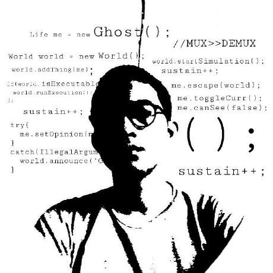

Hello, I am
Backend developer with 3+ years of experience building scalable systems for enterprise banking and fintech platforms using Go, microservices, and cloud-native architectures.

I am a passionate Backend Developer based in Jakarta, Indonesia, specializing in building robust, scalable, and high-performance backend systems.
With over 3 years of professional experience in the fintech and banking industry, I have had the privilege of working on enterprise-grade platforms at Bank BRI and OCBC Indonesia, where I designed and implemented microservices architectures, RESTful APIs, gRPC services, and GraphQL endpoints that serve millions of users.
I am deeply passionate about writing clean, testable code and following Go best practices. I thrive in Agile environments where collaboration, code quality, and continuous delivery are paramount.
$ cat about.json
{
"name": "Muhammad Chirzul Maula",
"role": "Backend Developer",
"location": "Jakarta, Indonesia",
"education": {
"university": "Universitas Diponegoro",
"degree": "Bachelor of Computer Science",
"gpa": 3.06
},
"primary_lang": "Go (Golang)",
"passion": "Scalable Systems",
"status": "Building stuff"
}
$ echo $MOTTO
"Write clean code. Ship reliable systems."
$ _
Digital application by Ultra Micro Holding (BRI, Pegadaian, PNM) for ultra-micro entrepreneurs, supporting marketing agents and BRILink agents.
Strategic modernization under BRIvolution 2.0, unifying BRI digital infrastructure and delivery platforms onto a modern middleware.
BRI Integrated Corporate Solution Platform for business clients with real-time financial insights and transactions.
OCBC digital onboarding platform for fully online account creation with e-KYC verification for retail and business customers.
Internal centralized financial calculator engine for mutual funds, deposits, loans, and FX instruments.
Official website providing legal information, public reports, confidential complaint system, and institutional profiles.
Built production-grade systems at Indonesia largest bank (BRI) serving millions of customers across digital platforms.
Designed and implemented distributed microservices with gRPC, message queues, and event-driven patterns.
Developed secure financial calculation engines and onboarding systems compliant with banking regulations.
Achieved over 85% unit test coverage using Go testing and Testify, ensuring reliability in critical services.
Optimized code, queries, and architectures to improve system performance and scalability.
Active participant in Scrum ceremonies, code reviews, and cross-functional team collaboration.
CompTIA
2022Digital Talent Scholarship
2022Dicoding Indonesia
2022Dicoding Indonesia
2022Dicoding Indonesia
2022Digital Talent Scholarship
2021Dicoding Indonesia
2021I am always open to discussing new projects, creative ideas, or opportunities to be part of your vision. Let us connect!
$ ./send_message.sh --to chirzul
Initializing secure connection...
Ready to receive your message
Response time: less than 24 hours
$ cat /etc/motd
"Let us build something great together."
$ open mailto:chirzul@proton.me
$ open linkedin.com/in/chirzulmaula
$ _